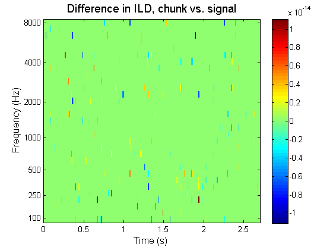

Object-oriented implementation of WP2 bottom-up processing
Contents
This Demo scripts presents the object-oriented implementation of the WP2 bottom-up cue/feature extraction. It is intended as a demo at that stage, and not a working copy, as important feature are not implemented fully yet.
Currently supported features
- Mono & Stereo input signals
- Block-processing (real-time) compatibility
- Following representations:
getDependencies('available')
ans =
Columns 1 through 4
'time' 'gammatone' 'innerhaircell' 'crosscorrelation'
Columns 5 through 8
'autocorrelation' 'ratemap_magnitude' 'ratemap_power' 'ild'
Columns 9 through 10
'itd_xcorr' 'ic_xcorr'
Coming-up features:
- User-provided parameter handling
- Multiple requests at startup
- Feedback handling
Initialize and load a signal
clear all,close all load('TestBinauralCues');
1- Basic advantages of object-oriented approach: Extraction of inner hair-cell envelope for a single audio channel
request = 'innerhaircell'; % Select one channel of the audio signal data = earSignals(:,2);
Initialization is done in two steps:
dObj = dataObject(data,fsHz); % Create a data object based on this signal mObj = manager(dObj,request); % Instantiate a manager
Everything is now ready for processing:
mObj.processSignal
Results are stored in the data object:
dObj.innerhaircell{1}.plot;

The object dObj contains all the signals computed in the process as objects, each having specific methods, e.g.:
fprintf('%s for %s signal was computed for %i frequency channels.\n',... dObj.innerhaircell{1}.Label,... dObj.innerhaircell{1}.Canal,... size(dObj.innerhaircell{1}.cfHz,2))
Inner hair-cell envelope for mono signal was computed for 31 frequency channels.
Most objects are inheriting from the "handle" super-class, which allows to call them "by reference" instead of Matlab typical "by value", limiting memory usage from duplicates and allowing for using pointers to objects instances instead of duplicates. For example, the input and output lists properties of the manager class (used for routing inputs and outputs) are pointers to the actual input/output signals in the data object:
mObj.OutputList{1}.plot;
mObj.InputList{1}.play

clear dObj mObj data
2- Complex scenario:
Chunk-based extraction of a frame-based binaural cue (ILD)
request = 'ild'; chunkSize = 2000; % Chunk duration in samples % Use both ear signals data = earSignals;
Create an empty data object. It will be filled up as new ear signal chunks are "acquired".
dObj = dataObject([],fsHz,1); % Last input (1) indicates a stereo signal mObj = manager(dObj,request); % Instantiate a manager
From here on, simulating real-time chunk acquisition and processing request...
% Number of chunks in the signal n_chunks = ceil(size(data,1)/chunkSize); % Zero-pad the signal to an integer number of chunks (not necessary, but % but used for later comparison with signal-based processing) data = [data;zeros(n_chunks*chunkSize-size(data,1),size(data,2))]; % Loop on all the chunks for ii = 1:n_chunks
Each new chunk of signal is then read and processed by the manager
% Read signal chunk chunk = data((ii-1)*chunkSize+1:ii*chunkSize,:); % Request processing for that chunk mObj.processChunk(chunk);
end % Plot the result dObj.ild{1}.plot;

Extract the same cue but from the whole signal at once for comparison
dObj2 = dataObject(data,fsHz); % Create a new data object mObj2 = manager(dObj2,request); % Create a new manager mObj2.processSignal; % Do the processing
Compute and plot the difference between the two approaches
delta_ild = TimeFrequencySignal(dObj.ild{1}.FsHz,'ild',dObj.ild{1}.cfHz,...
'Difference in ILD, chunk vs. signal',...
dObj.ild{1}.Data-dObj2.ild{1}.Data);
delta_ild.plot;
